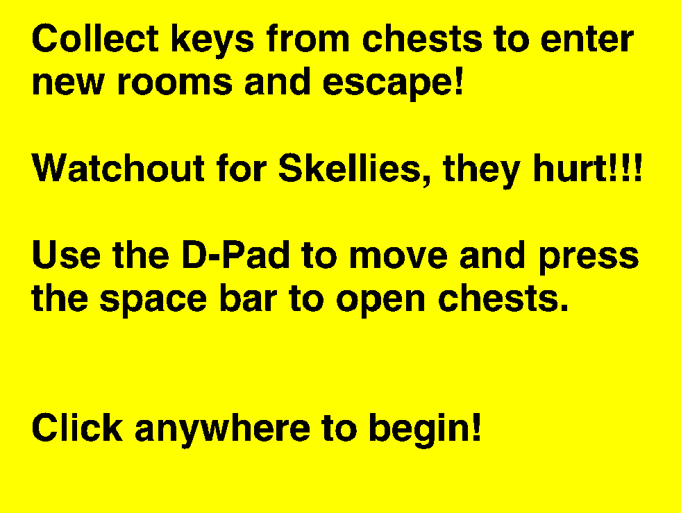
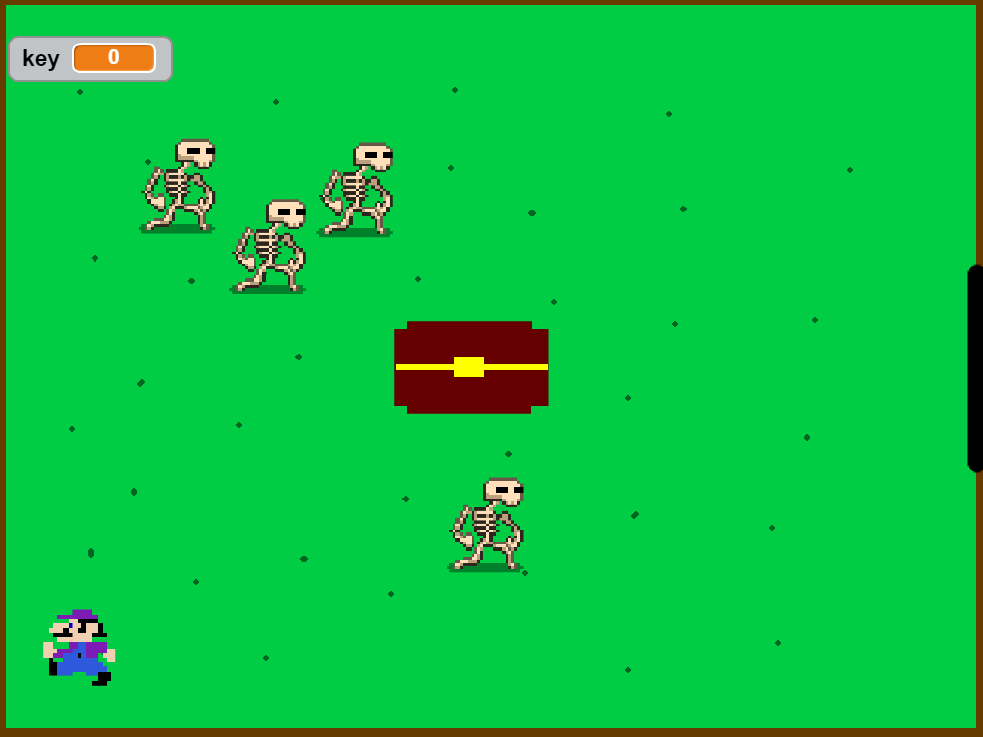
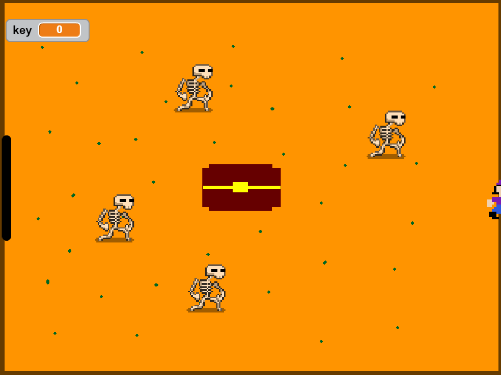

This is my first game made in Scratch, Rush Maze. In the game, you, the player, are trapped in rooms and you need to escape. In order to escape, you must collect a key from the chest and use it to open the black door, but beware, the Skellies will stop you no matter the cost!
Here is a screenshot of the starting menu.
This is the first level of the game!
This is the second level of the game!
Here is a video of my run, this will give you an idea of how to play.
And now, here is the game you have been waiting for, try it!
In this project I worked on the scripting. I worked on all of the scripting in the game. Some examples of my work are the movement of the skellies and the player, the ability to get a key from the chest, and the ability to go to a new room. My favorite part of this project was adding Lavender Town music and the other sound effects. The most difficult part of this project was getting the key to function properly.